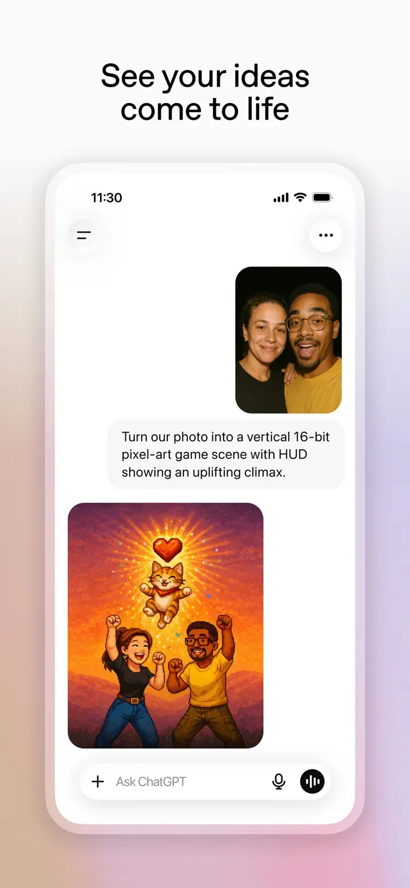

Chatgpt 的 Design.md 主题展示，围绕移动端、AI 与开发工具组织页面。
Chatgpt mobile product theme.

#0D0D0D: #0D0D0D#FFFFFF: #FFFFFF#212121: #212121#ECECEC: #ECECEC#F7F7F8: #F7F7F8#2F2F2F: #2F2F2F#E5E5E5: #E5E5E5#676767: #676767#8E8E8E: #8E8E8E#2A7FFF: #2A7FFF#CCCCCC: #CCCCCC#4D4D4D: #4D4D4D#3B82F6: #3B82F6#60A5FA: #60A5FA#93C5FD: #93C5FDdisplay: Söhnebody: Söhneprimary: Söhnemono: Menlofallback: -apple-system,BlinkMacSystemFont,Inter,Segoe UI,Helvetica,Arial,sans-serifhints: Söhne,Söhne,Menlocontrol: 8pxcard: 18pxpreview: 24pxpill: 500pxcircle: 50%scale: 0px,4px,8px,12px,18px,24px,500px,50%source: design-mdbase: 4pxscale: 4px,8px,12px,16px,20px,24px,32px,40px,56px,72pxsource: design-md